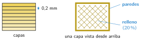
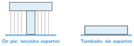

Preparar la impresión: el laminador
🤔 Pienso5 min
Qué hago aquí: Piensa un momento y contesta con lo que ya sabes. No pasa nada si no lo sabes: es para empezar.
Para cortar un pan en rebanadas iguales, ¿qué tienes que decidir antes de empezar?
📖 Leo y aprendo15 min
Qué hago aquí: Lee despacio, mira los dibujos y los ejemplos, y quédate con la idea clave del final.
La impresora no entiende un archivo STL. Antes hay que usar un programa: el laminador.
El laminador hace dos cosas:
- Corta la pieza en capas, como un pan en rebanadas .
- Escribe las órdenes para la impresora. Este archivo se llama G-code.
En el laminador elegimos:
- Altura de capa: normalmente 0,2 mm.
- Paredes: el borde de la pieza. Con 2 o 3 vueltas es resistente.
- Relleno: por dentro, la pieza no es maciza. Lleva una rejilla. Con un 20 % es suficiente.

Si una parte de la pieza queda en el aire, hacen falta soportes. Son columnas que se quitan al acabar. Muchas veces basta con girar la pieza.

✏️ Hago25 min
Qué hago aquí: Haz las actividades en orden. Empieza siempre por las básicas.
Ordena los pasos escribiendo 1, 2, 3...
- Imprimir
- Diseñar en Tinkercad
- Laminar y crear el G-code
- Exportar el STL
Completa: por dentro, la pieza no es maciza. Lleva un en forma de rejilla.
Abre la arandela en el laminador. Usa capas de 0,2 mm y relleno del 20 %. Apunta:
Tiempo: Gramos de plástico:
Rodea las piezas que necesitan soportes en esta posición.
- Un vaso boca arriba
- Una letra T de pie
- Una seta
Un rollo de 1 kg de plástico cuesta 20 €. Por tanto, 1 g cuesta 2 céntimos. ¿Cuánto cuesta una pieza de 15 g?
🚀 Amplío (si quieres saber más)
Qué hago aquí: ¿Has terminado? Lee la curiosidad o elige el reto. Es voluntario.
Abre el G-code con el bloc de notas. Busca una línea que empiece por M104. ¿Qué crees que ordena? Pista: va seguida de un número parecido a 200.
✅ Compruebo5 min
Qué hago aquí: Contesta sin mirar la ficha y marca cómo lo llevas.